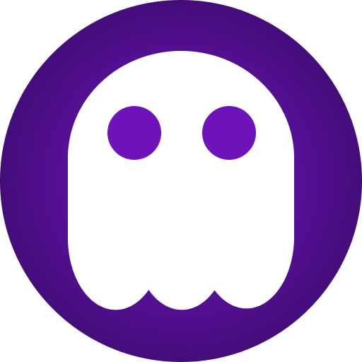
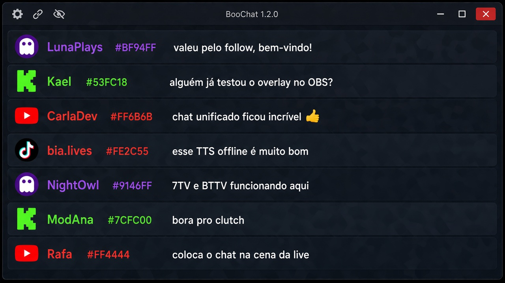
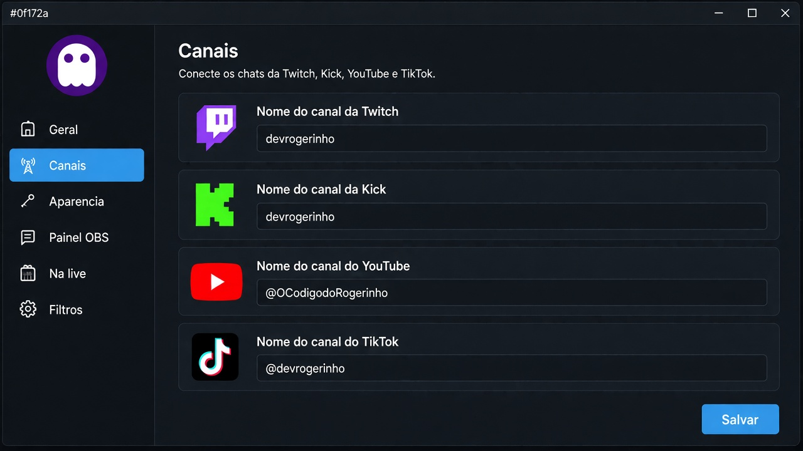
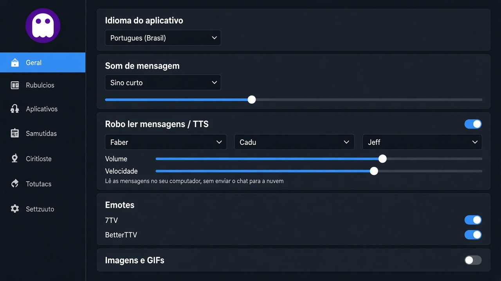
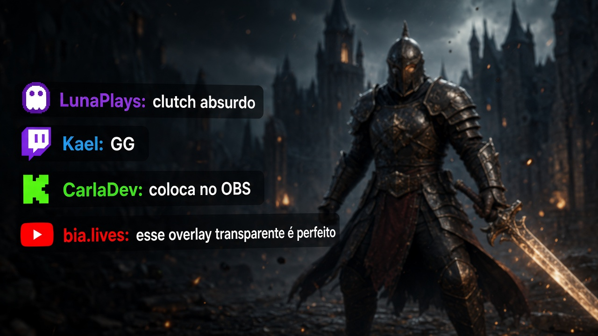

Chat unificado
Twitch, Kick, YouTube e TikTok na mesma lista, com logo ou bolinha colorida da plataforma.

BooChatPara streamers · Windows, macOS e Linux
O BooChat captura Twitch, Kick, YouTube e TikTok e mostra tudo numa só janela. Use por cima do jogo, no painel do OBS ou na cena que o público vê.
LunaPlays: valeu pelo follow, bem-vindo!
Kael: alguém já testou o overlay no OBS?
CarlaDev: chat unificado ficou incrível
bia.lives: esse TTS offline é muito bom
NightOwl: 7TV e BetterTTV funcionando aqui
ModAna: bora pro clutch
Rafa: coloca o chat na cena da live
Streamers que passam em mais de uma plataforma não precisam mais abrir quatro chats. O BooChat junta as mensagens, deixa a janela transparente e envia o mesmo chat para o OBS.
Twitch, Kick, YouTube e TikTok na mesma lista, com logo ou bolinha colorida da plataforma.
Sobreponha o chat no jogo sem fundo sólido. Atalho Ctrl + Alt + A para mostrar ou esconder.
Link local só para o dock. Você acompanha o chat no OBS; quem assiste a live não vê.
Outro link, só para a fonte de navegador da live. Fundo transparente e aparência própria.
O app lê as mensagens no seu computador (vozes Faber, Cadu e Jeff). Não envia o chat para a nuvem.
Sino, toque suave ou bolhas quando chega mensagem nova. Volume e mute na hora.
7TV e BetterTTV na Twitch, além dos emotes nativos de cada plataforma.
Links diretos de imagem, TWShot, Lightshot, Imgur e Tenor aparecem no chat.
Nightbot, StreamElements, Moobot e a lista que você quiser ficam de fora.
Fonte e fundo separados para a janela, o painel do OBS e o chat que vai para a live.
Português, inglês, espanhol, francês, alemão e italiano na interface.
O app avisa quando sai versão nova nas releases do GitHub e você atualiza com um clique.
Telas do BooChat 1.2.1: chat unificado, canais, alertas e overlay na live.




O BooChat sobe um servidor local em 127.0.0.1 enquanto o app está aberto.
São dois links diferentes, de propósito.
Canais
Conecte os chats da Twitch, Kick, YouTube e TikTok.
Instalador para Windows, DMG para macOS (Intel e Apple Silicon) e AppImage, DEB ou RPM no Linux.
Todas as versões e arquivos